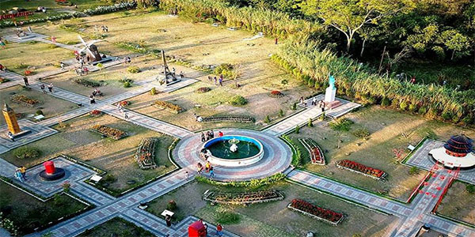
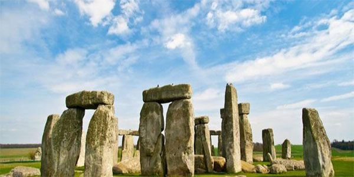
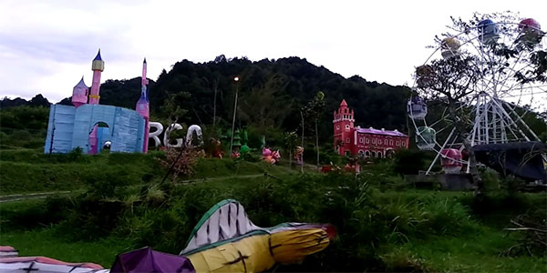

TOURIST DESTINATIONS IN SLEMAN
Melihat kemegahan Gunung Merapi terkadang sedikit terganggu oleh sejumlah hal, sebut saja pepohonan, perbukitan, dan lain-lain. Jika ingin melihat kemegahan Merapi tanpa dihalangi apapun, kamu bisa langsung menuju ke Kaliadem.
Lokasinya yang cukup dekat dengan puncak Merapi dengan ketinggian 2,980m menjadikan tempat ini spot yang sempurna untuk menyaksikan kemegahan Gunung Merapi. Di sini, kamu bisa dengan leluasa menyaksikan kemegahan gunung berapi paling aktif di Jogja dan Jawa Tengah itu. Udara di sini juga sejuk, lho!
Lokasi: Desa Kepuharjo, Cangkringan, Kabupaten Sleman, Daerah Istimewa Yogyakarta
Tiket: Membayar retribusi warga sebesar 5,000 IDR di sejumlah titik
Candi Ijo merupakan salah satu candi yang terkenal sebagai candi tertinggi di Jogja. Bukan karena bangunannya yang menjulang, melainkan letaknya yang berada di bukit Gumuk Ijo dengan ketinggian 375m di atas permukaan air laut
Karena letaknya, Candi Ijo juga menjadi spot yang pas untuk menikmati sunset dari ketinggian. Bagi pecinta misteri dan sejarah, Candi Ijo juga masih menyimpan sejumlah pertanyaan yang belum terjawab lho. Tertarik untuk memecahkan misteri itu?
Lokasi: Kikis, Sambirejo, Prambanan, Kabupaten Sleman, Daerah Istimewa Yogyakarta
Tiket: 5,000 IDR per orang
Jika biasanya bangunan candi didirikan lebih tinggi dari tanah di sekitarnya, lain halnya dengan Candi Sambisari, yang permukaannya berada jauh lebih rendah dari tanah di sekitarnya. Keunikan inilah yang membuat Candi Sambisari menjadi terkenal!
Komplek candi ini terdiri dari satu candi induk dan tiga candi pendamping. Selain lokasinya yang cukup tenang, panorama yang bisa kamu lihat di sini juga luar biasa. Kamu juga bisa menuju ke museum mini, yang memberikan gambaran dan sejarah mengenai Candi Sambisari.
Lokasi: Jl. Candi Sambisari, Purwomartani, Kalasan, Purwomartani, Kalasan, Kabupaten Sleman, Daerah Istimewa Yogyakarta
Tiket: 3,000 IDR per orang
Landmark dunia di Merapi Park

Ingin liburan keliling dunia hanya di satu tempat? Bisa. Silahkan mengunjungi Merapi Park, taman dengan landmark ikonik dari seluruh dunia.
Kamu bisa melihat replika sejumlah destinasi ternama Eropa, mulai dari menara Eiffel di Paris, menara Pisa, hingga kincir angin khas Belanda ataupun Big Ben yang ada di London. Berselfie adalah aktivitas wajib di spot wisata mini Eropa di Indonesia ini!
Lokasi: Jl. Kaliurang KM. 22, Hargobinangun, Pakem, Kabupaten Sleman, Daerah Istimewa Yogyakarta
Tiket: 15,000 IDR per orang
Istana Ratu Boko memiliki keistimewaan tersendiri karena bukan merupakan situs arkeologi biasa. Melihat sejarahnya, istana ini sebenarnya adalah bekas kompleks yang terdiri dari beberapa bagian bangunan megah lho.
Terlepas dari itu, Ratu Boko sebenarnya adalah spot yang sangat bagus untuk menikmati sunsetdi Jogja. Lokasinya yang berada di atas bukit, lengkap dengan lingkungan yang asri dan nyaman, akan membuatmu sulit untuk meninggalkan tempat ini.
Lokasi: Gatak, Bokoharjo, Prambanan, Kabupaten Sleman, Daerah Istimewa Yogyakarta
Tiket: 10,000 IDR untuk anak-anak dan 25,000 IDR untuk dewasa
Monumen prasejarah Stonehenge

Jika melihat Stonehenge di Inggris terlalu mahal, kamu bisa melipir ke dusun Trutan, Kepuharjo, Cangkringan, Sleman untuk menemukan kembarannya.
Replika monumen Stonehenge ini memang sengaja dibangun dengan background Gunung Merapi. Tujuannya adalah untuk meningkatkan tingkat pariwisata di Sleman bagi warga lokal maupun mancanegara.
Lokasi: Trutan, Kepuharjo, Cangkringan, Kabupaten Sleman, Daerah Istimewa Yogyakarta
Tiket: 10,000 IDR per orang
Taman Gardu Pandang Kaliurang

Destinasi yang sekarang sedang naik daun adalah Taman Gardu Pandang Kaliurang. Selain bisa mengamati pemandangan yang indah dari ketinggian, kamu juga akan dimanjakan oleh sejumlah spot selfie kekinian lengkap dengan lampu-lampu yang cantik.
Meski sudah berusia cukup tua, gardu pandang Merapi ini tetap berdiri kokoh lho. Fasilitas lain yang juga menunjang pengunjung untuk berlibur di sini adalah pergelaran Festival of Light yang sangat indah
Lokasi: Kaliurang Barat, Hargobinangun, Pakem, Kabupaten Sleman, Daerah Istimewa Yogyakarta
Tiket: 3,000 IDR per orang